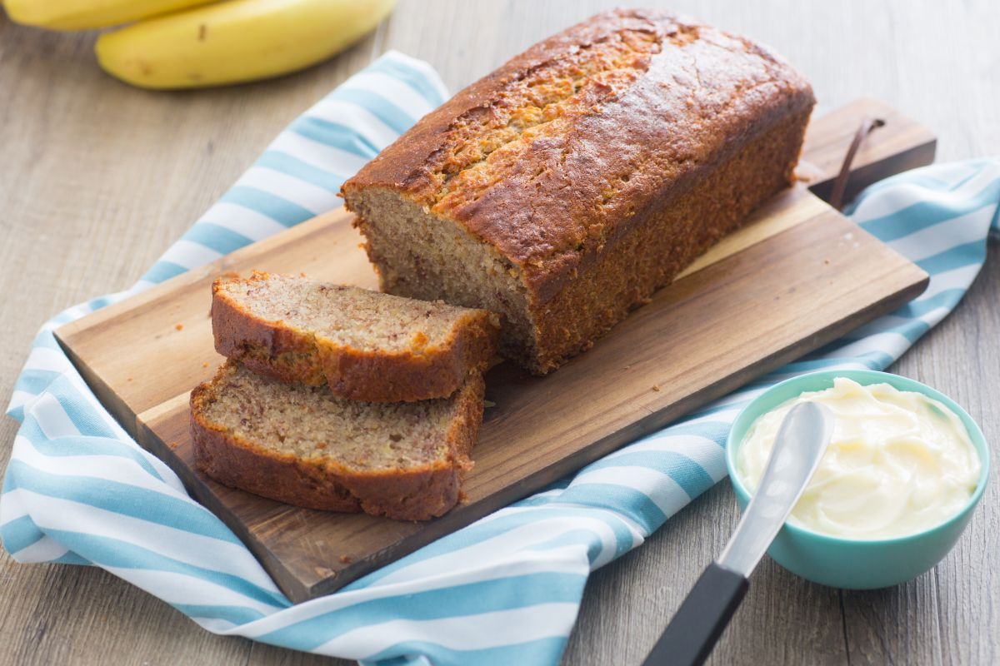

Protein Banana Bread Recipe

Banana bread is an indulgent snack enjoyed by most. But what if this indulgent
snack became a healthy snack? We will be making protein banana bread which will
not only be delicious but will also be nourishing.
Ingredients
Protein Powder
Almond Flour
Coconut Sugar
Cinnamon
Eggs
Vanilla
Baking Soda
Coconut Oil
Banana
Steps
- Preheat oven to 350 degrees and line a 9 inch loaf pan
with parchment paper, rubbing the other sides with coconut oil
-
In a medium bowl, whisk the flour, protein, sugar, cinnamon,
baking soda and salt
-
In a separate large bowl, whisk the oil, eggs, and vanilla. Add
in the banana and whisk until combined.
-
Pour the dry ingredients into the wet ingredients and whisk until combined
-
Pour into the prepared pan and bake until dark brown and a toothpick
inserted in the center comes out clean, about 55 minutes to an hour.
-
Remove banana bread from oven and let cool down.
-
Once cooled down, slice and enjoy banana bread.